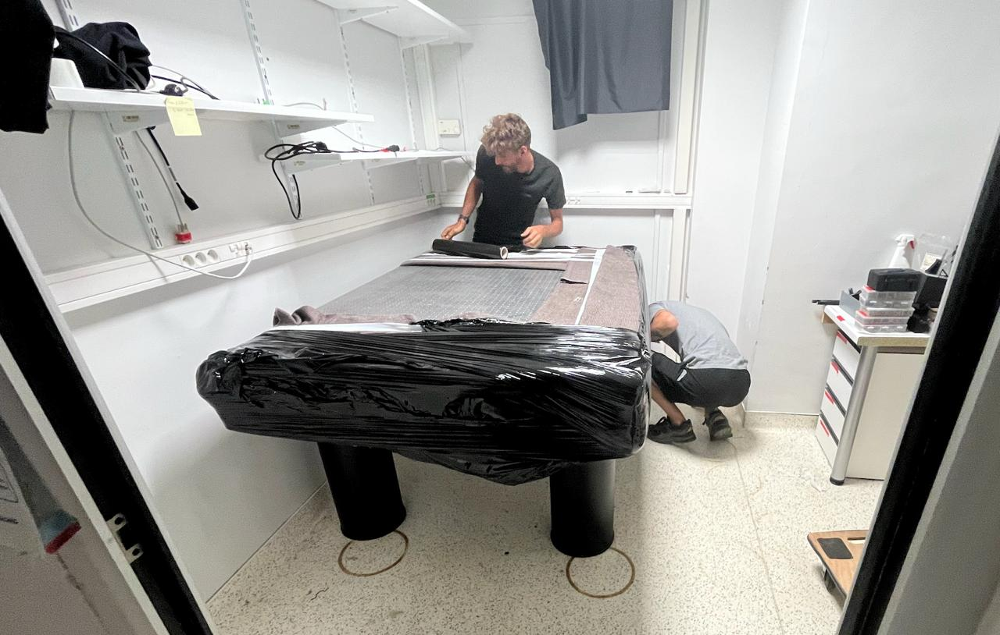

La table
I embarked on an endeavour that I did not expect to be so complicated. So this is partly a way to remember an adventure, but also a constructive criticism of a system that favours standard but inefficient procedures over creative solutions, even when the latter can save a lot of money and energy.
The story begins with Didier Marguet, from CIML in Marseille, who offered me his FCS setup and additional systems that he had built over the years, as he was retiring. I obviously took the offer.
Even though both our institutes are part of CNRS, the bureaucracy was already complicated and took several months. In the end, thanks to a strategic phone call from the great Anaïs Fradin, we managed.
The next problem was transporting the optical table. It weighs 300 kg, so the options were either to go with four of my strong friends and a van, or to hire a professional moving company. I went for the second option, even though my spirit was pushing me towards the first. In retrospect, my instinct was right.
So I tried to navigate the wild market of moving companies. Apparently, transporting a table over 300 km can cost around five grand. More than the table itself. Eventually, I found a company that could do it for a third.
And this is where the show begins.
With French public research money, you are not supposed to pay in advance, but the company wanted an advance payment. They discussed the issue with the great Marylène, and it looked like she had found a solution. Then the company disappeared.
Being an optimist, I waited. Eventually, they confirmed the booking, so I went to Marseille to help them and organise everything the day before the move.
The guy from the company called me while I was with Didier. As I clearly don't speak French, Didier had to mediate. At some point, Didier made a resigned expression: "It's not gonna happen."

In the end, they did come and transport the table to Grenoble, but I had to pay cash in advance and, eventually, make a bank transfer directly to the driver's account because, according to his boss, the driver didn't have enough money to get back to Marseille. The driver apologised. They also broke the truck's tail lift, so they couldn't unload the table for a good hour, while all the IBS administration was in the parking lot with me and them.
This whole operation made me reflect about the inefficiency of public institutions. I don't want to complain, I just want to acknowledge that sometimes more flexibility would be welcomed. In fact I can't complain because we all had a lot of fun eventually.